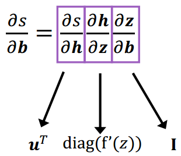

LLMs公开课 - 2.神经网络基础
1.神经网络组成部分
1.1 神经网络
（1）神经元
人工神经网络：灵感来自于大脑中的生物神经网络
神经元是一个具有输入和一个输出和参数$w$,$b$的计算单元
（2）单层神经网络
（3）多层神经网络
1.2 激活函数
如果神经网络中只存在线性运算的话，那么多层的神经网络其实可以被转化为单层的神经网络；所以我们使用非线性的激活函数，防止多层的神经网络塌缩成单一的神经网络
（1）Sigmoid
（2）Tanh
（3）ReLU
1.3 输出层
增加若干个隐层可以提高网络的表达能力，如果想要得到我们想要的输出结果，就需要添加网络的最后一层，即输出层
2.训练方式
2.1 训练目标
（1）均方根误差
其中，$\theta$是神经网络参数
（2）交叉熵
其中，$\theta$是神经网络参数
2.2 随机梯度下降
更新规则：
其中，$ \alpha
$是学习率
（1）梯度
给定$n$个输入，$m$个输出的函数：
则输出为$m\times n$的雅可比矩阵
其中，$\left(\frac{\partial \mathrm{F}}{\partial x}\right){i j}=\frac{\partial \mathrm{F}{\mathrm{i}}}{\partial x_{j}}$表示第i个输出对第j个输入求梯度。
（2）链式求导法则
给定$s=\boldsymbol{u}^{T} \boldsymbol{h}, \boldsymbol{h}=f(\boldsymbol{z}), \boldsymbol{z}=\boldsymbol{W} \boldsymbol{x}+\boldsymbol{b}$，求$\frac{\partial s}{\partial \boldsymbol{b}}$

2.3 反向传播
（1）计算图
计算图：将神经网路的传播以图的形式表示。
- 源节点：输入
- 内部节点：操作
- 边传递操作：结果
梯度回传：沿着边往回走，沿着梯度传递
（2）单个结点
节点接收到一个“上游梯度”
目标是传递正确的“下游梯度”
每个节点都有一个局部梯度（ local gradient ），输出相对于输入的梯度
（3）示例
函数：$\begin{array}{c}f(x, y, z)=(x+y) \max (y, z) , x=1, y=2, z=0\end{array}$
前向传播：
本地梯度（Local gradients）：
初始计算图：
回传第一步：
回传第二步（*）：
回传第三步（max）：
回传第四步（+）：
计算最终梯度：
3.词表示：Word2Vec
Word2Vec：可以学到一些语义内涵，捕捉到语言学上的一些规律
3.1 Word2Vec
Word2vec使用浅层神经网络将单词与分布式表示相关联
它可以捕获许多语言规则，例如:
Word2vec可以利用两种架构来生成单词的分布式表示：
- Continuous bag-of-words (
CBOW) - Continuous
skip-gram
3.2 滑动窗口
Word2vec使用一个固定大小的滑动窗口沿着句子移动
- 在每个窗口中，中间的单词是目标单词，其他单词是上下文单词
- 给定上下文单词，CBOW预测目标单词的概率
- 当给定目标词时，skip-gram预测上下文词的概率
滑动窗口大小为5
3.3 CBOW（Continuous Bag-of-Words）
在CBOW架构中，该模型给出一个周围上下文词的窗口来预测目标词
- 根据词袋假设：上下文词的顺序不影响预测
- 假设窗口大小为5，
Never too late to learn
3.4 Continuous Skip-Gram
在skip-gram架构中，该模型从目标词中预测上下文词
假设窗口大小为5，Never too late to learn
Skip-gram每步预测一个上下文词，训练样本为:
3.5 Softmax存在问题
当词汇量很大的时候
- Softmax对所有单词的每一步都依赖于大量的模型参数，这在计算上是不切实际的
- 我们需要提高计算效率
事实上，在word2vec中我们并不需要一个完整的概率模型；word2vec主要有两种改进方法:
- 负采样
- 分层softmax
3.6 负采样
当词汇表非常大，这意味着模型每一步都有大量的权重需要更新
负抽样的思想是，每一步只更新一小部分权重
既然有词汇表并且知道上下文单词，可以按概率选择几个不在上下文单词列表中的单词：
其中，$f(w_i)$为$w_i$的频次，$3/4$为经验值
相比于$\frac{f\left(w{i}\right)}{\sum{j=1}^{V} f\left(w_{j}\right)}$，这可以增加低频词出现的概率。
假设我们只选取4个负采样词：
然后我们可以计算损失，并优化每一步的权重(不是所有的权重)
- 假设有一个大小为300×10,000的权重矩阵，输出大小为5
- 只需要更新300×5权重，这只占所有权重的0.05%
3.7 其他一些细节
（1）Sub-Sampling
罕见的单词可能更有可能携带不同的信息，据此，Sub-Sampling有概率地丢弃单词:
其中，$f(w)$为单词频率，$t$是一个可调节的阈值吗
（2）Soft sliding window
滑动窗口应该给较远的单词分配较少的权重
将滑动窗口最大的定义为 $S{max}$，实际的滑动窗口大小在1和$S{max}$之间随机选择
因此，那些靠近目标单词的单词更有可能出现在窗口中
4.通用神经网络
4.1 RNN
（1）顺序记忆
RNN的关键概念：处理序列数据时的顺序存储器
定义：一种让大脑更容易识别序列模式的机制
RNN递归地更新序列内存以建模序列数据
（2）RNN
（3）RNN单元
（4）RNN语言模型
$W_h$参数是共享的
（5）优缺点
优点：
- 可以处理任何长度的输入
- 模型尺寸不增加较长的输入
- 跨时间步共享权重
- 从许多后退步骤计算步骤
缺点：
- 循环计算速度慢
- 在实践中，很难从许多步骤中获取信息
（6）梯度问题
RNN链比较长，容易出现梯度消失或爆炸
（7）RNN变种
梯度消失问题的主要解决方案是在递归中使用更复杂的隐单元计算
- GRU
- LSTM
主要思想：保持记忆，捕捉远距离的依赖
4.2 GRU（Gated Recurrent Unit）
Vanilla RNN在下一个时间步直接计算隐藏层：
在原始RNN中，增加门控机制，主要用于平衡过去的信息和输入之间的影响。主要有两个门控单元：
更新门（update gate）：$z{i}=\sigma\left(W{x}^{(z)} x{i}+W{h}^{(z)} h_{i-1}+b^{(z)}\right)$
重置门（reset gate）：$r{i}=\sigma\left(W{x}^{(r)} x{i}+W{h}^{(r)} h_{i-1}+b^{(r)}\right)$
新的激活输出 $\tilde{h}{i}$：$\tilde{h}{i}=\tanh \left(W{x} x{i}+r{i} * W{h} h_{i-1}+b\right)$
最后的隐藏单元输出$hi$：$h{i}=z{i} * h{i-1}+\left(1-z{i}\right) * \tilde{h}{i}$
示例
如果重置门$r_i$ 接近于0
忽略先前的隐藏状态，这表明当前的激活与过去无关。例如，在一篇新文章的开头，过去的信息对于当前的激活是无用的。
更新门$z_i$控制与当前激活相比，过去的状态有多少是重要的。
如果$z_i$接近于1，然后可以通过许多时间步骤复制该单元中的信息!
如果$z_i$接近于0，然后将信息放入该单元并完全取代历史信息
4.3 LSTM（Long Short-Term Memory network）
LSTM是一种特殊的RNN，能够像GRU一样学习长期依赖关系；
（1）状态单元 $C_t$
LSTM的关键是单元状态$C_t$
- 用于捕获长期依赖的额外向量
- 直接贯穿整个链条，只有少量的线性交互作用
- 易于删除或添加信息到细胞状态
（2）遗忘门$f_t$
遗忘门：决定从状态单元中丢弃哪些信息
其中，$\left[h{t-1}, x{t}\right]$为拼接向量
如果$f_{t}=0$，则直接遗忘过去的信息。
（3）输入门 $i_t$
输入门：决定在单元状态中存储什么信息；
输入门$it$和新的候选状态信息 $\tilde{C}{t}$
更新就的状态信息 $C_{t-1}$，结合前两步的结果
（4）输出门$o_t$
输出门：决定输出什么信息
为特定的单词表示调整句子信息
功能强大，特别是当堆叠和更深层时(每个隐藏层已经由深层内部网络计算)
如果你有大量的数据，非常有用
4.4 双向RNN
在传统的RNN中，当前状态只捕获过去的信息
问题：在很多应用中，我们希望输出$y_t$依赖于整个输入序列
4.5 CNN

RNN vs CNN